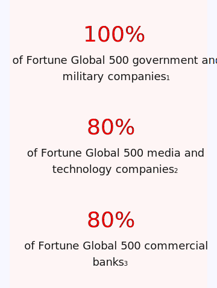

Statistic
Theme
Color
Sizes
The default size uses 36pt for the number and 40px for an icon. A large stat uses 48pt for the number and 64px for an icon. Both size variations use 18pt for body text and 20pt for titles.
Configurations/variants
An icon can be added as the first element in a statistic.
A call to action can be added as the last element in a statistic.
A stat can be placed inside a card.
Alignment
All content in a stat should use the same alignment. Currently all stat content is centered.
Accessibility
Color contrast
A stat's colors may change based on the theme. This is done to ensure that the color contrast meets WCAG AA standards.
Light theme - primary background
Dark theme - primary background
Light theme - secondary background
Dark theme - secondary background
Responsive design
Large screens
A single stat will span a maximum of 6 columns.
Small screens
Stats in a row on large screens will stack on smaller screens. Font sizes will adjust based on the mobile typography scale.

Spacing
Within the component
The Statistic component uses spacers to define space values between elements. The default and large variations use the same spacing.
Within groups of stats
Spacing between vertically stacked stats should be 48px.